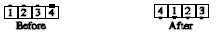

From a general line of four with both ends facing the same direction: Dancer on the right end Trades to the other end of the line. Meanwhile, each of the other dancers, in a single, smooth motion, faces the vacated spot, takes a step forward, and turns another 1/4 in the same direction as first turned. Finishes in a line facing the opposite direction.

© Copyright 1983, 1986-1988, 1995-2011 Bill Davis, John Sybalsky and CALLERLAB Inc., The International Association of Square Dance Callers. Permission to reprint, republish, and create derivative works without royalty is hereby granted, provided this notice appears. Publication on the Internet of derivative works without royalty is hereby granted provided this notice appears. Permission to quote parts or all of this document without royalty is hereby granted, provided this notice is included. Information contained herein shall not be changed nor revised in any derivation or publication.